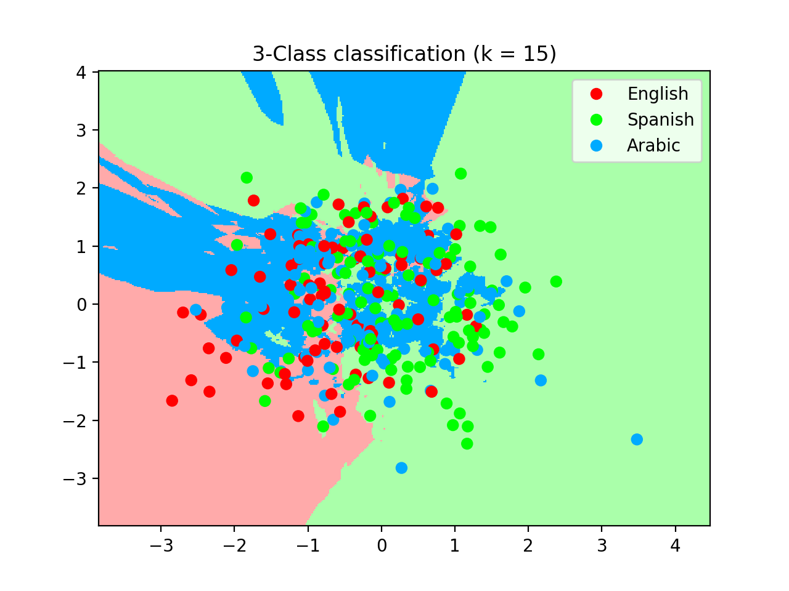
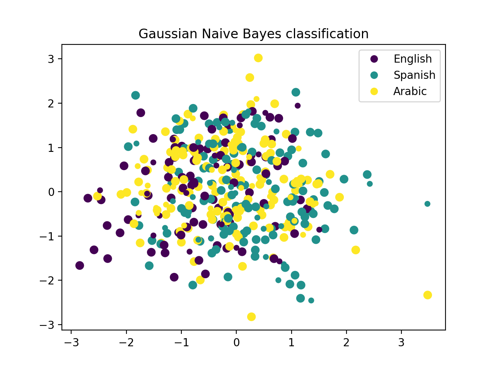

Problem Motivation
Accents can signify a speaker’s ethnic identity, regardless of the context or language being spoken. Personal assistants like Siri and Alexa have reach every corner of the world, and it has become important that such systems become inclusive to diversity in accents. This is one of the many cases where accent recognition systems become crucial, and our project is a small step towards that.
Data Description
We have used a subset of the Speech Accent Archive [1], which is provided for general access to everyone on Kaggle. This dataset has native and non-native speakers of English all read the same English paragraph and are carefully recorded.This dataset allows us to compare the demographic and linguistic backgrounds of the speakers in order to determine which variables are key predictors of each accent. The speech accent archive demonstrates that accents are systematic rather than merely mistaken speech.
Some fun facts about our dataset:
We chose a subset of this dataset by taking the top 3 accents that have the most number of samples since all the other accents have very few samples which will bias our model. The final dataset consists of the following languages and number of samples: English (578), Spanish (162) and Arabic (102). In order to maintain the ratio of each accent in the dataset, we take a random subset of 150 English audio samples.
Approach
Literature corresponding to automatic speech recognition, accent classification [2] or animal and bird sound classification [3] suggest using coefficients of the Mel Frequency Cepstrum [4] and similar spectograms to capture the changing frequencies in a much more robust and efficient way. We use the audio and music processing python package called Librosa to process the audio signals and extract these features.
Mel-frequency cepstral coefficients (MFCC): MFCC coefficients model the spectral energy distribution of the power spectrum of the audio and are obtained by using Fast Fourier Transform, Mel Scale filtering and discrete consine transform. We obtain 20 such coeffcients and average them for all the frames for a given audio sample to get feature vector of length 20.

Delta MFCC: Delta MFCC is calculated by taking a one-step difference of the MFCC coefficients along the time axis. We also then average them along the time-frames to get a 20 length feature vector. Delta MFCC help us in capturing the temporal relations of the MFCC coefficients.
We also experimented with other features, but found that they do are not representative of speech waveforms, such as Chroma STFT, Spectral Contrast, Tonnetz and Melspectrogram.We train multiple supervised and un-supervised machine learning models in order to understand the effectiveness of different models for accent classification. The features are also normalized to have a mean of 0 and standard deviation of 1 before being used to train the models. The data is also split in to a 80%-20% train-test split using stratified sampling to ensure equal distribution of each class in the train and test splits. The trained models along with their hyperparamters are described in next section.
Experiments
All these experiments are carried out with different sets of parameters and datasets. To start out with, we used the top 9 accents, with just MFCC as the features and found that the results are not at par with the previous works. Below is our workflow for obtaining the different subset of data and features for our experiments!
K-Means and Gaussian Misture Model clustering
We used K-Means to cluster the speech samples, and visualize the structure of data samples. We use the sklearn KMeans library, and used Principal Component Analysis on the flattened MFCC and Delta MFCC features. All the plottings were done using Linear Discriminant Analysis(LDA).
The clustering on top 3 samples, after using PCA and plotting on predicted labels looks like the following.

Although, there are well-defined clusters for the predicted labels, the actual label plotting shows that the data is very spread out, and the clusering model is trying to cluster on only very specific parameters. This shows that our dataset has very minimal structure, which is captured on a very high level with clustering.

Gaussian Mixture Model gives very similar results, reinforcing the minimal definition of structure of our data, as shown below. Left image is visualization with predicted labels, and right image is on true labels.

Support Vector Classifier
One-vs-all classification is used for a multi-class problem like this. We use a Radial Basis Function (RBF) kernel for the kernel transformation. The scores of our model is visualized as shown.

Logistic Regression
It is a variant of the linear regression but is uses the log-probability of a given class as the dependent variable. The coefficients of the model can be analyzed to undertand the magnitude and direction of impact of a given feature in classification. The decision boundaries of top 3 acccents with the distribution of test data is shown below.
K-Nearest Neighbours
Assign an audio sample the majority class that exists among its 5 closest neighbouring audio samples in the Euclidean space. Below is the graph for ther classifier, showing neighborhoods and classificsation.
Naive Bayes
The likelihood of the features is assumed to be a Gaussian distribution and training involves learning the model paramters of mean and sigma for each Gaussian.
Decision Tree Classifier
Predict class of a given audio sample by learning simple decision rules from training data. We use the deafult paramters while training the model. The decision tree of our data is visualized as below.
Random Forest Classifier
A group of decision trees, each fit on a subset of the data and use averaging to improve to improve accuracy and control over-fitting. We use the default value of 10 estimators (decision trees).
Convolutional Neural Network
We convert the MFCC features for a give audio signal to an image and train a Convolutional Neural Network on top of it. Deep Learning has seen an increased usage in a variety of tasks and we hope that the CNN will be able to capture subtle differences and changes in the MFCC coefficients over time. Trained a shallow CNN on the MFCC images using a categorical cross entropy loss to capture the temporal changes in the MFCC coefficients.
Results and Analysis
Results about accuracy and analysis.
(1) Add tables for accuracy of each supervised approach (overall and for each langauge). (2) PCA/GMM plots for unsuperivsed. (3) Feature importance analysis for supervised approaches. (graphs) (4) Deep learning model selection analysis.